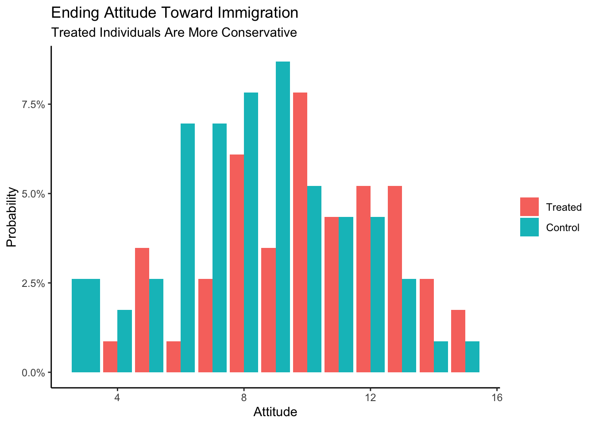
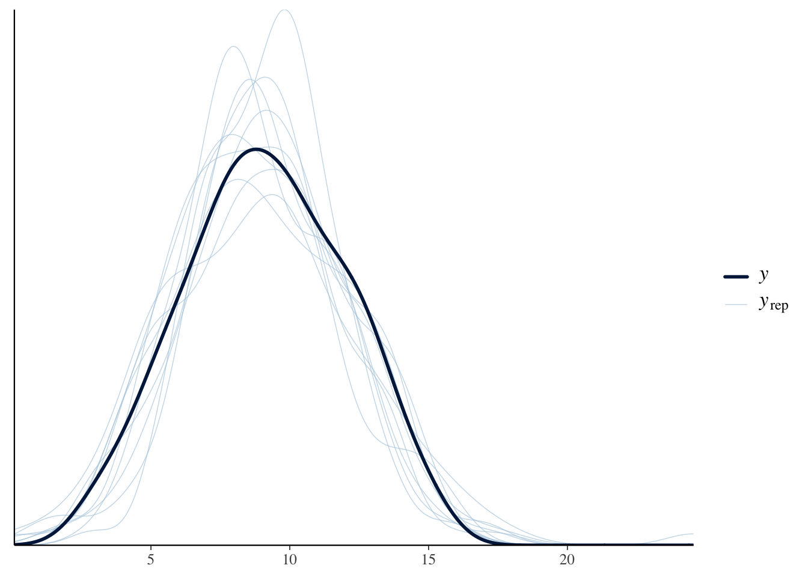
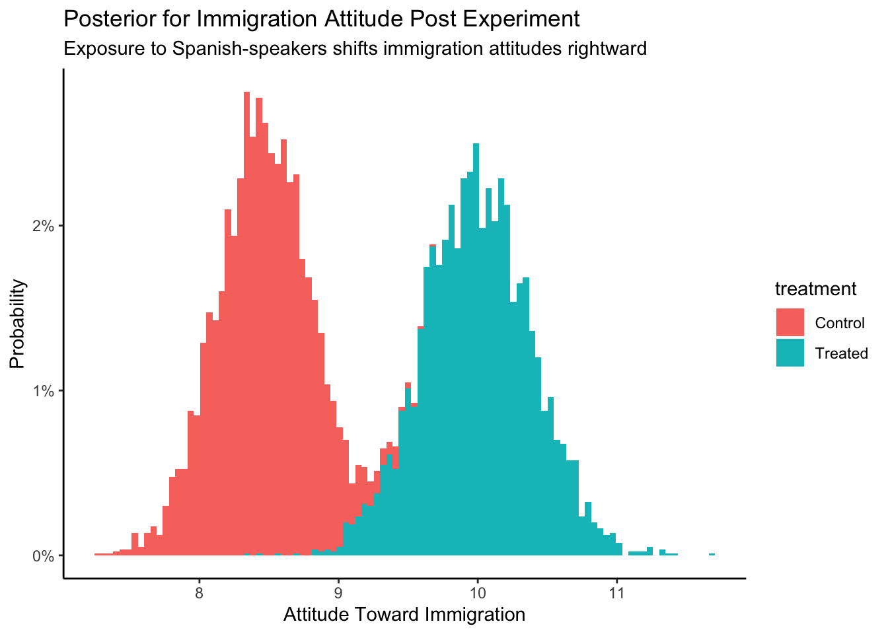

6 Three Parameters: Causal
Models have parameters. In Chapter 3 we created a model with a single parameter \(\rho\), the proportion of red beads in an urn. In Chapter 5, we used models with two parameters: \(\mu\) (the average height in the population, generically known as a model “intercept”) and \(\sigma\) (the variation in height in the population). Here — can you guess where this is going? — we will build models with three parameters: \(\sigma\) and two “coefficients.” The two coefficient parameters will be labeled \(\beta_0\) and \(\beta_1\). All this notation is confusing, not least because different academic fields use inconsistent schemes. Follow the Cardinal Virtues and tackle your problem step by step.
Perhaps more importantly, a focus on parameters is less relevant now than it was decades ago, when computational limitations made answering our actual questions harder. Parameters are imaginary. They don’t exist. They, in general, are not the answer to a real world question. They are tools, along with the models of which they are a part, we use to answer questions.
Packages:
The primer.data package includes the trains data set. We use the brms package to build Bayesian models. (“brms” stands for Bayesian regression models.) The tidybayes packages makes working the fitted models easier. As usual, we use the tidyverse package.
In this chapter, we are going to ask a series of questions about the causal effect of exposure to Spanish-speakers on the attitude of US commuters toward immigration. These questions will pertain to all train commuters in the US today. For a refresher on this data, refer to Chapter 1.
Consider:
What is the average treatment effect, of exposing people to Spanish-speakers, on their attitudes toward immigration?
Answering causal questions requires (at least) two potential outcomes: immigration attitudes when a person receives the treatment of being exposed to Spanish-speakers and immigration attitudes, for that same person, when they don’t receive the treatment. We can answer these and similar questions by creating a model with immigration attitude as the dependent variable and exposure to Spanish-speakers as the independent variable. Follow the four Cardinal Virtues: Wisdom, Justice, Courage and Temperance.
6.1 Wisdom

Wisdom requires the creation of a Preceptor Table, an examination of our data, and a determination, using the concept of “validity,” as to whether or not we can (reasonably!) assume that the two come from the same population.
6.1.1 Preceptor Table
Causal or predictive model: In this case, the model is clearly causal, so our Preceptor Table will have two columns for the potential outcomes. If all you need to know to answer the question is the outcome under one value of the treatment, then the model is predictive, even if there is a treatment.
Outcome: A person’s attitude toward immigration is the outcome.
For the questions that we have at hand we will be talking about all the adults in July 1, 2012 at the location of Chicago, Illinois which will allow us to answer the questions more accurately.
Units: Our units for this scenario would be individuals because the questions are about the attributes of unique people at the station. The question does not specify which individuals we are interested in, so assume it is adults in Chicago.
Treatment: In any causal model, there is at least one covariate which is defined as the “treatment,” something which we can manipulate so that some units receive one version and other units get a different version. A “treatment” is just a covariate which we could manipulate, at least in theory. In this case, the treatment is exposure to Spanish-speakers. Units can either be exposed, i.e., they receive the “treatment,” or they can not be exposed, i.e., they receive the “control.”
Moment in Time: We are interested in the causal effect today, in the year 2024.
Again, some of these details were not indicated in the original question. We almost always have to enage in a dialogue with whomever asked that question.
Our Preceptor Table:
| Preceptor Table | |||
|---|---|---|---|
| ID | Potential Outcomes | Covariate | |
| Control Ending Attitude | Treated Ending Attitude | Treatment | |
1 |
5* |
8 |
Yes |
2 |
7 |
4* |
No |
… |
… |
… |
… |
10 |
3* |
5 |
Yes |
11 |
10* |
7 |
Yes |
… |
… |
… |
… |
N |
6 |
13* |
No |
Starred values were not observed in the experiment. That is, Person 10 received the treatment and, afterwards, had a value of 5 for her attitude toward immigration. We don’t know — we can’t know — what her attitude would have been if she had received control instead. But, with the tools of inference, we can estimate what that value would have been if she had, in fact, received control.
A Preceptor Table is the smallest possible table with rows and columns such that, if there is no missing data, all our questions are easy to answer. To answer questions about the average treatment effect, of exposing people to Spanish-speakers, on their attitudes toward immigration, we need a row for every adult in Chicago in 2024.
6.1.2 Exploratory Data Analysis
Recall the discussion from Chapter 1. Enos (2014) randomly placed Spanish-speaking confederates on nine train platforms around Boston, Massachusetts. The data that we want to analyze consists of the attitude toward immigration after the experiment is complete (att_end) and the exposure to Spanish-speakers (treatment) of each individual on these train platforms.
trains |>
select(att_end, treatment)# A tibble: 115 × 2
att_end treatment
<dbl> <fct>
1 11 Treated
2 10 Treated
3 5 Treated
4 11 Treated
5 5 Control
6 13 Treated
7 13 Control
8 11 Treated
9 12 Control
10 10 Treated
# ℹ 105 more rowsThe treatment can either be “Treated” or “Control” which are the two factors that may influence att_end. Participants were asked three questions about immigration issues, each of which allowed for an answer indicating strength of agreement on a scale form 1 to 5, with higher values for att_end indicating more agreement with conservative viewpoints.
att_end treatment
Min. : 3.000 Treated:51
1st Qu.: 7.000 Control:64
Median : 9.000
Mean : 9.139
3rd Qu.:11.000
Max. :15.000 The data include information about each respondent’s sex, political affiliations, age, income and so on. treatment indicates whether a subject was in the control or treatment group. The key outcome is their attitude toward immigration after the experiment: att_end.
summary() shows us what the different values of att_end and treatment are because it is a factor. The range for att_end seems reasonable.
Show the code
trains |>
ggplot(aes(x = att_end, fill = treatment)) +
geom_bar(aes(y = after_stat(count/sum(count))),
position = "dodge") +
labs(title = "Ending Attitude Toward Immigration",
subtitle = "Treated Individuals Are More Conservative",
x = "Attitude",
y = "Probability",
fill = NULL) +
scale_y_continuous(labels = scales::percent_format()) +
theme_classic()
When compared with individuals in the control group, the treated individuals seem more conservative.
6.1.3 Validity
Validity concerns the relationship between the columns in the Preceptor Table and the data. Are they similar enough that we can “stack” one on top of the other in order to create a Population Table?
att_end, the outcome measure in our data is fairly clear measure of one’s attitude toward immigration. But is that exactly what we care about in the Chicago of 2024? Probably not. Politics in America has changed a great deal, not least with the Trump presidency. The phrases used in the 2012 survey do not mean the same thing today as they meant then. The aspects of immigration policy which we are most interested in have changed. But in a conflict between the data and the Preceptor Table, the latter must adjust because we can’t (easily) change the data.
treatment, the treatment variable in our data, involves Spanish-speakers on commuter train platforms. Is that what we are proposing to do in Chicago in 2024? Probably not! And, even if we actually attempted to use that treatment today, we would never be able to replicate it exactly, not just because we almost certainly could not get the same Spanish-speakers to come to Chicago. And, even if we did, they would be older, and different in other ways. Outside of scientific experiments, it is almost never the case that the treatment variable in the data will perfectly match the treatment variable in the Preceptor Table.
As always, we face a choice. We can either give up on the analysis — and this is often the correct decision! — or we can adjust the meaning of the columns in the Preceptor Table so that they are “close enough” to the data that validity holds. You won’t be surprised to see that we choose the option behind Door #2!
Using data from a 2012 survey of Boston-area commuters, we seek to measure the causal effect of exposure to Spanish-speakers on attitudes toward immigration among adults in Chicago and similar cities in 2024.
6.2 Justice

The four concerns of Justice remain the same: the Population Table, stability, representativeness, and unconfoundedness.
6.2.1 Population Table
After assuming validity, we can now create our Population Table. Recall that every row from both the Preceptor Table and the data is included in the Population Table (at least at the start), along with all the rows from the underlying population from which we assume that both the Preceptor Table and the data were drawn. The Population Table includes rows from three sources: the Preceptor Table, the actual data, and all other members of the population.
| Population Table | |||||
|---|---|---|---|---|---|
| Source | Potential Outcomes | Covariates | |||
| Controlled | Treated | Treatment | Year | City | |
… |
… |
… |
… |
… |
… |
Data |
2 |
7* |
No |
2012 |
Boston, MA |
Data |
10* |
6 |
Yes |
2012 |
Boston, MA |
… |
… |
… |
… |
… |
… |
… |
… |
… |
… |
… |
… |
Preceptor Table |
… |
… |
… |
2024 |
Chicago, IL |
Preceptor Table |
… |
… |
… |
2024 |
Chicago, IL |
… |
… |
… |
… |
… |
… |
Note: the values that have a star next to them symbolize the possible values that may exist if they were “control” instead of “treated” or vice versa.
Our year within the Population table is an example of the moment in time.
Our actual data rows contain the information that we do know. These rows contain entries for both our covariates and the outcomes. In this case, the actual data comes from a study conducted on train commuters around Boston, MA in 2012, so our city entries for these rows will read “Boston, MA” and our year entries of these rows will read “2012”.
Does the Population Table have to include all the rows in the data? No! For example, if our question is just about attitudes toward immigration among men, we might delete all the rows with female respondents from the data before constructing the Population Table.
Each row in the Population Table represents a unique ID/time combination. We rarely specify the Population Table exactly. For example, does the Population Table extend to 2010? Or 2050? Does it include Los Angeles? How about London? None of those questions have to be answered for us to make progress. As long as there is an underlying population from which we may assume that the rows in both the data and the Preceptor Table have been drawn, we can proceed.
6.2.2 Stability
If the assumption of stability holds, then, first, the relationships between the columns in 2012 is the same as the relationships across the entire population and, second, that the same applies to the relationships between the columns in 2024.
Recall the underlying logic of every data science analysis. We start wih data that was collected at a specific moment in time. We estimate a relationship between the variables, in this case between treatment and att_end. We then assume that this relationship holds beyond the time period of the data itself. First, we assume that the relationship holds across a larger time period than just the moment corresponding to our data gathering. Second, we then assume that this relationship also holds for the moment in time corresponding to our Preceptor Table.
The problem is that there are lots of reasons for thinking that stability does not hold in this case because US politics has changed so much since 2012, especially in regard to immigration. Immigration is much more salient now then it was then, so it is likely that the effect of the treatment might be very different today. However, if we don’t assume stability then we can’t use data from 2012 to inform our inferences about 2024. So, we assume it.
6.2.3 Representativeness
Representativeness, or the lack thereof, concerns two relationship, among the rows in the Population Table. The first is between the Preceptor Table and the other rows from that moment in time. The second is between our data and the other rows from that moment.
Stability looks across time periods. Representativeness looks within time periods.
Our Preceptor Table is not a random draw from the underlying population today. We only care about Chicago (and not any other city). If the Preceptor Table is a random draw, then, by definition, it should be representative of the underlying population, at least within a given time period. Just because something is true across all cities in 2024 does not guarantee that it is true in Chicago. In fact, it is only true if Chicago is representative of the other 2024 rows from the population.
A similar set of issues apply to our data. Ideally, our data would be a random sample from the underlying population in 2012. But it isn’t! We only have data from Boston, and not any other city. We need to assume that the rows we have from Boston are representive of the other rows in the population from 2012.
That assumption seems pretty extreme! For example, the survey respondents were all suburban commuters on train platforms. There are numerous ways in which such a sample is unrepresentative of both Boston adults as a whole, much less all the adults in other cities.
6.2.4 Unconfoundedness
Unconfoundedness means that the treatment assignment is independent of the potential outcomes, when we condition on pre-treatment covariates. A model is confounded if this is not true.
Since treatment was assigned at random, we can be fairly confident that treatment assignment is idependent of everything. This is the beauty of randomization and the key reason why randomized control trials are the gold standard in statistics for drawing conclusions about causal effects.
Putting these concerns together, we should add at least one sentence about these concerns to the analysis summary:
Using data from a 2012 survey of Boston-area commuters, we seek to measure the causal effect of exposure to Spanish-speakers on attitudes toward immigration among adults in Chicago and similar cities in 2024. There is some concern that the relationship has changed since our data was collected.
Is that the only reasonable concern? No! There are always numerous problems with any data analysis because our assumptions are never true. Honesty compels us to highlight at least one such problem anytime we present our results. Which one to highlight and how to do so are matters of professional judgment.
6.3 Courage

Justice gave us the Population Table. Courage selects the data generating mechanism. We first specify the mathematical formula which connects the outcome variable we are interested in with the other data that we have. We explore different models. We need to decide which variables to include and to estimate the values of unknown parameters. We check our models for consistency with the data we have. We avoid hypothesis tests. We select one model.
Because the outcome variable is continuous, we use a standard regression model.
\[ y_i = \beta_0 + \beta_1 x_i + \epsilon_i \]
with \(\epsilon_i \sim N(0, \sigma^2)\). \(y_i\) is the attitude toward immigration for person \(i\) after being exposed to the treatment or control. \(x_i\) corresponds to the treatment status for person \(i\). As we saw in the EDA above, treatment is a factor variable with two levels: “Treatment” and “Control.” Since English words don’t work in formulas, brm() will automatically transform treatment into a 0/1 variable named treatmentControl which will take on the value 1 if person \(i\) received control and 0 if they received treatment.
6.3.1 Models
We create our fitted model in the usual way.
Because the default value of family is guassian(), we could have left out this part of the function call and gotten the same result. We add the seed argument to ensure that the fitted object is identical whenever we (or you) run this code. Recall that there is randomness in the modeling fitting process. This rarely affects the substantive results. But it is often convenient to be able to replicate a given model exactly. Using seed accomplishes this goal. The number 9 is arbitrary, other than being my lucky number. As usual, we use silent = 2 and refresh = 0 to turn off all the annoying messages.
fit_gauss Family: gaussian
Links: mu = identity; sigma = identity
Formula: att_end ~ treatment
Data: trains (Number of observations: 115)
Draws: 4 chains, each with iter = 2000; warmup = 1000; thin = 1;
total post-warmup draws = 4000
Regression Coefficients:
Estimate Est.Error l-95% CI u-95% CI Rhat Bulk_ESS Tail_ESS
Intercept 10.00 0.39 9.23 10.77 1.00 3576 2992
treatmentControl -1.54 0.51 -2.55 -0.50 1.00 3593 2332
Further Distributional Parameters:
Estimate Est.Error l-95% CI u-95% CI Rhat Bulk_ESS Tail_ESS
sigma 2.80 0.19 2.45 3.19 1.00 3008 2550
Draws were sampled using sampling(NUTS). For each parameter, Bulk_ESS
and Tail_ESS are effective sample size measures, and Rhat is the potential
scale reduction factor on split chains (at convergence, Rhat = 1).The math for this model is exactly the same as the math for the predictive model in the first part of this chapter, although we change the notation a bit for clarity.
\[ attitude_i = \beta_0 + \beta_1 control_i + \epsilon_i\]
where \[control_i \in \{0,1\}\] \[\epsilon_i \sim N(0, \sigma^2)\]
Nothing has changed, except for the meaning of the data items and the interpretations of the parameters. Let’s take a look at the parameters of the situation which plays a role alongside the mathematics to create the fitted model.
On the left-hand side we still have the outcome, \(attitude_i\), however in this case, this is a person’s attitude toward immigration after the experiment is complete. \(attitude_i\) takes on integer values between 3 and 15 inclusive. On the right-hand side, the part contained in the model will consist of the terms \(\beta_0\) and \(\beta_1\). For the most part, we don’t care about the values of parameters in our models. We care about the answers to our questions and the uncertainty associated therewith.
But in this simple model, the parameters also have a substantive interpretation. \(\beta_0\) is also the average attitude toward immigration for treated individuals. \(\beta_1\) is the difference between the attitude toward immigration for treated individuals — those exposed to Spanish-speakers — and the average attitude toward immigration for control individuals — those not exposed to Spanish-speakers. These are both our parameters. \(control_i\) is our explanatory variable and takes the value 0 or 1. In other words, this is a binary variable.The last part, \(\epsilon\) (“epsilon”), represents the part that is not explained by our model and is called the error term. It is simply the difference between the outcome and our model predictions. In our particular case, this includes all factors that have an influence on someone’s attitude toward immigration but are not accounted for by treatment status. We assume that this error follows a normal distribution with an expected value of 0.
Note that the formula applies to everyone in the population, not just the 115 people for whom we have data. This is what the stability assumption buys us. The index \(i\) does not just go from 1 through 115. It goes from 1 through \(N\), where \(N\) is the number of individuals in the population. Conceptually, everyone has an
att_endunder both treatment and under control, even we can only ever observe one of these.The small \(i\)’s are an index for the data set. It is equivalent to the “ID” column in our Preceptor Table and simply states that the outcome for person \(i\) is explained by the predictor variables (\(treatment_i\) and \(control_i\)) for person \(i\), along with an error term.
6.3.2 Testing
pp_check(fit_gauss)
Our graph in the darker blue represents the actual data. As we can see with the lighter blue graph, our fitted model is able to generate a distribution of the data that is similar when compared to the actual data. However, the “fake-data” produces some values for att_end which are impossible. We know from the survey details that the lowest possible value for att_end is 3 and the highest is 15. But, with our “fake-data” simulations, we see several values that are less than 3 and great than 15. Consider:
pp_check(fit_gauss, type = "hist", bins = 12)
Again, we see the problem. The true data is always within the range of 3 to 15. Our simulated (or “fake”) data sometimes strays outside this range, even if not very far and not very often. Is it a serious flaw? That is tough to decide.
Let’s explore the issue by first changing treat_end from a continuous to an integer variable, which is probably more correct, and then re-estimate the model. Besides changing att_end to an integer, we also change the family to poisson() since this is the recommended model for dealing with “count” data
trains2 <- trains |>
mutate(att_end = as.integer(att_end))
fit_poisson <- brm(formula = att_end ~ treatment,
data = trains2,
family = poisson(),
silent = 2,
refresh = 0,
seed = 9)Because the poisson mode has a very different structure, the parameter estimates do not have a simple interpretation.
fit_poisson Family: poisson
Links: mu = log
Formula: att_end ~ treatment
Data: trains2 (Number of observations: 115)
Draws: 4 chains, each with iter = 2000; warmup = 1000; thin = 1;
total post-warmup draws = 4000
Regression Coefficients:
Estimate Est.Error l-95% CI u-95% CI Rhat Bulk_ESS Tail_ESS
Intercept 2.30 0.04 2.21 2.39 1.00 4291 3127
treatmentControl -0.17 0.06 -0.30 -0.04 1.00 3722 2343
Draws were sampled using sampling(NUTS). For each parameter, Bulk_ESS
and Tail_ESS are effective sample size measures, and Rhat is the potential
scale reduction factor on split chains (at convergence, Rhat = 1).The posterior predictive check looks better:
Show the code
pp_check(fit_poisson, type = "hist", bins = 19)Using 10 posterior draws for ppc type 'hist' by default.
The check is better but not perfect. We still have predicted values that are below three or above 15, even though that is impossible. A common approach at this point would be to use the negative binomial family. We save that exercise for another day.
The purpose of the virtue of Courage is to create a data generating mechanism which is consistent with our understanding of how the world works and not-contradicted by he data which we have. Although there are some problems with fit_gauss, it is good enough for our purposes. So, the DGM looks like:
\[ attitude_i = 10 - 1.5 * control_i + \epsilon_i\]
where \[control_i \in \{0,1\}\] and \[\epsilon_i \sim N(0, 2.8^2)\].
6.3.3 Data Generating Mechanism
Recall the Preceptor Table and the units from the beginning. We are concerned with three main ideas from the Preceptor Table: our units (individuals at the train station), our outcome (individual’s attitude toward immigration) covariates (the treatment that each individual received).
With the help of the data generating mechanism that we have created from our fitted model we can fill in the missing values to the Preceptor Tables. We use the data generating mechanism as the last step of Courage as it allows us to analyze and view our fitted model’s data.
Although we can review the posteriors of the parameters by looking at fit_gauss, it can bse useful to present the numbers in a formatted table.
| Characteristic | Beta | 95% CI1 |
|---|---|---|
| (Intercept) | 10 | 9.2, 11 |
| treatment | ||
| Treated | — | — |
| Control | -1.5 | -2.5, -0.50 |
| 1 CI = Credible Interval | ||
(Intercept) corresponds to 10.0 which is \(\beta_0\). As always, R has, behind the scenes, estimated the entire posterior probability distribution for \(\beta_0\). We are 95% confident that the true, but unknowable, average attitude toward immigration among the Treated in the population to be between 9.2 and 11. The posterior of \(b_1\), which is the coefficient of \(control_i\), is centered around -1.5 with a 95% confidence interval between -2.5 and -0,5.
Up until now, we have used the Bayesian interpretation of “confidence interval.” This is also the intuitive meaning which, outside of academia, is almost universal. There is a truth out there. We don’t know, and sometimes can’t know, the truth. A confidence interval, and its associated confidence level, tells us how likely the truth is to lie within a specific range. If your boss asks you for a confidence interval, she almost certainly is using this interpretation.
But, in contemporary academic research, the phrase “confidence interval” is usually given a “Frequentist” interpretation. (The biggest divide in statistics is between Bayesians and Frequentists. The Frequentist approach, also known as “Classical” statistics, has been dominant for 100 years. Its power is fading, which is why this textbook is Bayesian.) For a Frequentist, a 95% confidence interval means that, if we were to apply the procedure we used in an infinite number of future situations like this, we would expect the true value to fall within the calculated confidence intervals 95% of the time. In academia, a distinction is sometimes made between confidence intervals (which use the Frequentist interpretation) and credible intervals (which use the Bayesian interpretation). We won’t worry about that difference in this Primer.
We can now add a sentence which describes our model to our summary of the entire project.
Using data from a 2012 survey of Boston-area commuters, we seek to measure the causal effect of exposure to Spanish-speakers on attitudes toward immigration among adults in Chicago and similar cities in 2024. There is some concern that the relationship has changed since our data was collected. We modeled
att_end, a summary measure of attitude toward immigration measured on a 3 to 15 integer scale, as a linear function of treatment.
Obviously, a single extra sentence can only tell the reader so much. The important thing to note is that we are showing you a recipe for doing data science and for communicating your results. That communication will always include at least one sentence about the form of your model, the outcome variable and the covariates and/or treatments.
6.4 Temperance

Courage gave us the data generating mechanism. With Temperance we can create posteriors of the quantities of interest. We should be modest in the claims we make.
6.4.1 Questions and Answers
Recall the original question:
What is the average treatment effect, of exposing people to Spanish-speakers, on their attitudes toward immigration?
We have already clarified that the question refers to residents of Chicago (and similar cities) in 2024.
Use add_epred_draws() as usual. Creating the value for the newdata argument is tricky since we need to construct the treatment variable by hand. Even though treatment is a factor variable within trains, we can get away with using a simple character variable since either version would be transformed into a 0/1 variable by add_epred_draws().
fit_gauss |>
add_epred_draws(
newdata = tibble(treatment = c("Treated", "Control")))# A tibble: 8,000 × 6
# Groups: treatment, .row [2]
treatment .row .chain .iteration .draw .epred
<chr> <int> <int> <int> <int> <dbl>
1 Treated 1 NA NA 1 9.92
2 Treated 1 NA NA 2 9.71
3 Treated 1 NA NA 3 9.50
4 Treated 1 NA NA 4 10.7
5 Treated 1 NA NA 5 10.3
6 Treated 1 NA NA 6 10.0
7 Treated 1 NA NA 7 10.2
8 Treated 1 NA NA 8 10.2
9 Treated 1 NA NA 9 10.3
10 Treated 1 NA NA 10 10.6
# ℹ 7,990 more rowsWe have 8,000 rows. The first four thousand rows are draws from the first row of newdata, meaning treatment equals "Treated". The next four thousand rows are draws for treatment = "Control". Mapping this tibble is easy because of its tidy structure.
fit_gauss |>
add_epred_draws(
newdata = tibble(treatment = c("Treated", "Control"))) |>
ggplot(aes(x = .epred, fill = treatment)) +
geom_histogram(aes(y = after_stat(count/sum(count))),
bins = 100) +
labs(title = "Posterior for Immigration Attitude Post Experiment",
subtitle = "Exposure to Spanish-speakers shifts immigration attitudes rightward",
x = "Attitude Toward Immigration",
y = "Probability") +
scale_y_continuous(labels = scales::percent_format()) +
theme_classic()
Just eyeballing the graph, we can see that the posterior att_end for Control is centered around 8.5. For Treated, the center is around 10. Since the causal effect is the difference between two outcomes, we can simply subtract and estimate that the causal effect is about \(10 - 8.5 = 1.5\).
Even better, we can do the calculation on the individual rows of the posterior draws. But, first, we need to “widen” the tibble.
fit_gauss |>
add_epred_draws(
newdata = tibble(treatment = c("Treated", "Control"))) |>
pivot_wider(id_cols = .draw, names_from = treatment, values_from = .epred)# A tibble: 4,000 × 3
.draw Treated Control
<int> <dbl> <dbl>
1 1 9.92 8.10
2 2 9.71 8.71
3 3 9.50 8.76
4 4 10.7 8.41
5 5 10.3 8.32
6 6 10.0 7.75
7 7 10.2 7.89
8 8 10.2 7.99
9 9 10.3 8.33
10 10 10.6 8.13
# ℹ 3,990 more rowsThe resulting table has only 4,000 rows because we have put the posteriors for Treated and Control next to each other. Recall that we can perform algebra on posteriors just as we do with numbers. That is, the easiest way to calculate the causal effect is to subtract the posterior for the outcome under Control from the posterior of the outcome under Treatment.
fit_gauss |>
add_epred_draws(
newdata = tibble(treatment = c("Treated", "Control"))) |>
pivot_wider(id_cols = .draw, names_from = treatment, values_from = .epred) |>
mutate(causal_effect = Treated - Control) |>
ggplot(aes(x = causal_effect)) +
geom_histogram(aes(y = after_stat(count/sum(count))),
bins = 100) +
labs(title = "Posterior for Average Treatment Effect",
subtitle = "Exposure to Spanish-speakers shifts immigration attitudes rightward",
x = "Difference in Attitude",
y = "Probability") +
scale_y_continuous(labels = scales::percent_format()) +
theme_classic()
The posterior of the average causal effect is centered around 1.5, with a 95% confidence from about 0.5 to 2.5. How big an effect is 1.5? The difference between Republican and Democratic attitudes toward immigration, before the experiment, was about 2.3.
# A tibble: 2 × 2
party `mean(att_start)`
<chr> <dbl>
1 Democrat 8.81
2 Republican 11.1 So the causal effect of hearing Spanish-speakers is about the same as 2/3s of the distance between Republicans and Democrats. This is not a small effect! To summarize our analysis:
Using data from a 2012 survey of Boston-area commuters, we seek to measure the causal effect of exposure to Spanish-speakers on attitudes toward immigration among adults in Chicago and similar cities in 2024. There is some concern that the relationship has changed since our data was collected. We modeled
att_end, a summary measure of attitude toward immigration measured on a 3 to 15 integer scale, as a linear function of treatment. The average causal effect of treatment was about 1.5, with a 95% confidence interval of 0.5 to 2.5. Hearing Spanish-speakers made people more conservative with regard to immigration. That 1.5 effect is about 2/3s of the distance between the average attitudes toward immigration of Republicans versus Democrats.
6.4.2 Humility
We can never know the truth.
We need to maintain humility when we are making our inferences and decisions. Stay cautious my friends.